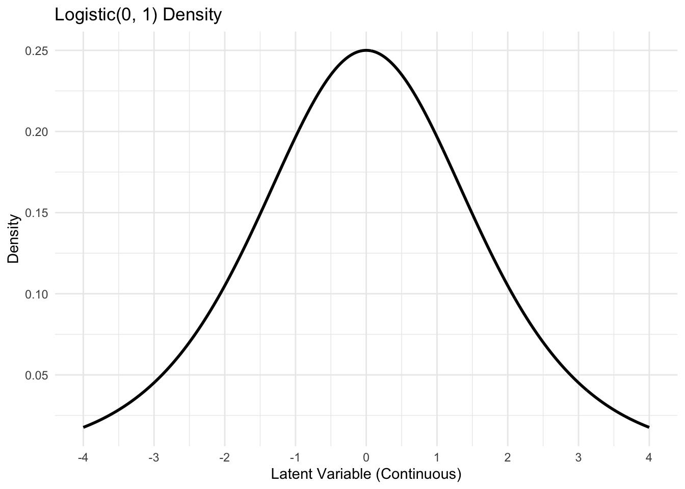
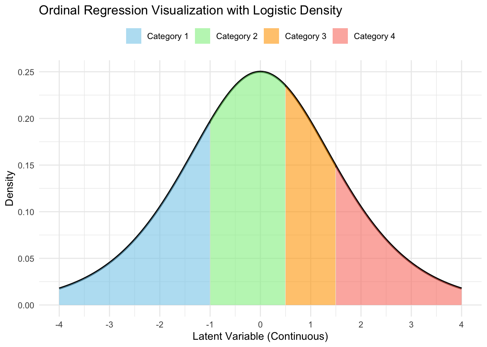

// additive_log_ratio.stan
functions {
matrix compute_alr_probs(int n, int K, int p, matrix X, matrix beta) {
matrix[n, K] probs;
matrix[n, K - 1] expXbeta = exp(X * beta);
for (i in 1:n) {
real sum_i = sum(expXbeta[i, ]);
for (j in 1:K) {
if (j < K) {
probs[i, j] = expXbeta[i, j] / (1 + sum_i);
}
if (j == K) probs[i, j] = 1 - sum(probs[i, 1:(K - 1)]);
}
}
return probs
}
}
data {
int<lower = 1> K;
int<lower = 1> n;
int<lower = 1> p;
array[n] int<lower = 1, upper = K> Y;
matrix[n, p] X;
matrix[n, K] delta;
}
parameters {
matrix[p, K - 1] beta;
}
model {
matrix[n, K] probs = compute_alr_probs(n, K, p, X, beta);
for (i in 1:n) {
for (j in 1:K) {
target += delta[i, j] * log(probs[i, j]);
}
}
target += normal_lpdf(to_vector(beta) | 0, 10);
}Multiclass Classification
Prof. Sam Berchuck
Feb 19, 2026
Review of last lecture
On Tuesday, we learned about classification using logistic regression.
Today, we will focus on multiclass classification: multinomial regression, ordinal regression.
Multiclass regression
Often times one encounters an outcome variable that is nominal and has more than two categories.
If there is no inherent rank or order to the variable, we can use multinomial regression. Examples include:
gender (male, female, non-binary),
blood type (A, B, AB, O).
If there is an order to the variable, we can use ordinal regression. Examples include:
stages of cancer (stage I, II, III, IV),
pain level (mild, moderate, severe).
Multinomial random variable
Assume an outcome \(Y_i \in \{1,\ldots,K\}\) for \(i = 1,\ldots,n\).
The likelihood in multinomial regression can be written as the following categorical likelihood,
\[f(\mathbf{Y} | \boldsymbol{\beta}) = \prod_{i=1}^n \prod_{j=1}^K P(Y_i = j)^{\delta_{ij}},\]
\(\delta_{ij} = 1(Y_i = j)\) is the Kronecker delta.
Since \(Y_i\) is discrete, we only need to specify \(P(Y_i = j)\) for all \(i\) and \(j\).
Log-linear regression
- One way to motivate multinomial regression is through a log-linear specification:
\[\log P(Y_i = j) = \mathbf{x}_i\boldsymbol{\beta}_j - \log Z.\]
\(\boldsymbol{\beta}_j\) is a \(j\) specific set of regression parameters.
\(P(Y_i = j) = \exp\{\mathbf{x}_i\boldsymbol{\beta}_j\}/Z\).
\(Z\) is a normalizing constant that guarentees that \(\sum_{j=1}^K P(Y_i = j) = 1\).
Finding the normalizing constant
- We know that,
\[\begin{aligned} 1 &= \sum_{j=1}^K P(Y_i = j) = \frac{1}{Z}\sum_{j=1}^K \exp\{\mathbf{x}_i\boldsymbol{\beta}_j\}\\ &\implies Z = \sum_{j=1}^K \exp\{\mathbf{x}_i\boldsymbol{\beta}_j\} \end{aligned}\]
Multinomial probabilities
- Thus, we have the following,
\[P(Y_i = k) = \frac{\exp\{\mathbf{x}_i\boldsymbol{\beta}_k\}}{\sum_{j = 1}^K\exp\{\mathbf{x}_i\boldsymbol{\beta}_j\}}.\]
This function is called the softmax function.
Unfortunately, this specification is not identifiable.
Identifiability issue
- We can add a vector \(\mathbf{c}\) to all parameters and get the same result,
\[\begin{aligned} \frac{\exp\{\mathbf{x}_i(\boldsymbol{\beta}_k + \mathbf{c})\}}{\sum_{j = 1}^K\exp\{\mathbf{x}_i(\boldsymbol{\beta}_j + \mathbf{c})\}} &= \frac{\exp\{\mathbf{x}_i\boldsymbol{\beta}_k\}}{\sum_{j = 1}^K\exp\{\mathbf{x}_i\boldsymbol{\beta}_j\}}. \end{aligned}\]
- A common solution is to set: \(\boldsymbol{\beta}_K = \mathbf{0}\).
Updating the probabilities
Using the identifiability constraint of \(\boldsymbol{\beta}_K = \mathbf{0}\), the probabilities become, \[\begin{aligned} P(Y_i = k) &= \frac{\exp\{\mathbf{x}_i\boldsymbol{\beta}_k\}}{1 + \sum_{j = 1}^{K-1}\exp\{\mathbf{x}_i\boldsymbol{\beta}_j\}}, \quad k \in \{1,\ldots,K-1\},\\ P(Y_i = K) &= \frac{1}{1 + \sum_{j = 1}^{K-1}\exp\{\mathbf{x}_i\boldsymbol{\beta}_j\}}. \end{aligned}\]
How to interpret the \(\boldsymbol{\beta}_k\)?
Deriving the additive log ratio model
- Using our specification of the probabilities, it can be seen that,
\[\begin{aligned} P(Y_i = k) &= \frac{\exp\{\mathbf{x}_i\boldsymbol{\beta}_k\}}{1 + \sum_{j = 1}^{K-1}\exp\{\mathbf{x}_i\boldsymbol{\beta}_j\}}\\ &= \left[\frac{1}{1 + \sum_{j = 1}^{K-1}\exp\{\mathbf{x}_i\boldsymbol{\beta}_j\}}\right]\exp\{\mathbf{x}_i\boldsymbol{\beta}_k\}\\ &= P(Y_i = K) \exp\{\mathbf{x}_i \boldsymbol{\beta}_k\}. \end{aligned}\]
\(\implies \log \frac{P(Y_i = k)}{P(Y_i = K)} = \mathbf{x}_i \boldsymbol{\beta}_k, \quad k \in \{1,\ldots,K-1\}\)
Additive log ratio model
- If outcome \(K\) is chosen as reference, the \(K − 1\) regression equations are:
\[\log \frac{P(Y_i = k)}{P(Y_i = K)} = \mathbf{x}_i \boldsymbol{\beta}_k, \quad k \in \{1,\ldots, K-1\}\]
This formulation is called additive log ratio.
\(\beta_{jk}\) represent the log-odds of being in category \(k\) relative to the baseline category \(K\) with a one-unit change in \(X_{ij}\).
- \(\exp (\beta_{jk})\) is an odds ratio.
Getting back to the likelihood
- The log-likelihood can be written as,
\[\log f(\mathbf{Y} | \boldsymbol{\beta}) = \sum_{i=1}^n \sum_{j=1}^K \delta_{ij} \log P(Y_i = j).\]
The \(P(Y_i = j)\) are given by the additive log ratio model.
As Bayesians, we only need to specify priors for \(\boldsymbol{\beta}_k, k \in \{1,\ldots,K-1\}\).
Multinomial regression in Stan
- Hard coding the likelihood.
Multinomial regression in Stan
- Non-identifiable version.
// multi_logit_bad.stan
data {
int<lower = 1> K;
int<lower = 1> n;
int<lower = 1> p;
array[n] int<lower = 1, upper = K> Y;
matrix[n, p] X;
}
parameters {
matrix[p, K] beta;
}
model {
matrix[n, K] Xbeta = X * beta;
for (i in 1:n) {
target += categorical_logit_lpmf(Y[i] | Xbeta[i]')
}
target += normal_lpdf(to_vector(beta) | 0, 10);
}Multinomial regression in Stan
- Zero identifiability constraint.
// multi_logit.stan
data {
int<lower = 1> K;
int<lower = 1> n;
int<lower = 1> p;
array[n] int<lower = 1, upper = K> Y;
matrix[n, p] X;
}
transformed data {
vector[p] zeros = rep_vector(0, p);
}
parameters {
matrix[p, K - 1] beta_raw;
}
transformed parameters {
matrix[p, K] beta = append_col(beta_raw, zeros);
}
model {
matrix[n, K] Xbeta = X * beta;
for (i in 1:n) {
target += categorical_logit_lpmf(Y[i] | Xbeta[i]')
}
target += normal_lpdf(to_vector(beta) | 0, 10);
}
generated quantities {
matrix[p, K - 1] ors = exp(beta_raw);
vector[n] Y_pred;
vector[n] log_lik;
for (i in 1:n) {
Y_pred[i] = categorical_logit_rng(Xbeta[i]');
log_lik[i] = categorical_logit_lpmf(Y[i] | Xbeta[i]');
}
}Ordinal regression
Let \(Y_i \in \{1,\ldots,K\}\) be an ordinal outcome with \(K\) categories.
- The likelihood in ordinal regression is identical to the one from multinomial regression,
\[f(\mathbf{Y} | \boldsymbol{\beta}) = \prod_{i=1}^n \prod_{j=1}^K P(Y_i = j)^{\delta_{ij}}.\]
- We need to add additional constraints that guarantee ordinality.
Proportional odds assumption
\(P(Y_i \leq k)\) is the cumulative probability of \(Y_i\) less than or equal to a specific category \(k=1,\ldots,K-1\).
The odds of being less than or equal to a particular category can be defined as, \[\frac{P(Y\leq k)}{P(Y > k)} \text { for } k=1,\ldots,K-1.\]
Not defined for \(k = K\), since division by zero is not defined.
Proportional odds regression
The log odds can then be modeled as follows, \[\log \frac{P(Y_i\leq k)}{P(Y_i > k)} = \text{logit}P(Y_i\leq k) = \alpha_k - \mathbf{x}_i \boldsymbol{\beta}\]
Why \(-\boldsymbol{\beta}\)?
\(\boldsymbol{\beta}\) is a common regression parameter. For a one-unit increase in \(x_{ij}\), \(\beta_j\) is the change in log odds of moving to a more severe level of the outcome \(Y_i\).
\(\alpha_k\) for \(k = 1,\ldots,K-1\) are \(k\)-specific intercepts that corresponds to the log odds of moving from level \(k\) to \(k+1\).
Understanding the probabilities
- One can solve for \(P(Y_i \leq k), \quad k = 1,\ldots,K-1\)),
\[P(Y_i \leq k) = \frac{\exp\{\alpha_k - \mathbf{x}_i\boldsymbol{\beta}\}}{1 + \exp\{\alpha_k - \mathbf{x}_i\boldsymbol{\beta}\}} = \text{expit}(\alpha_k - \mathbf{x}_i\boldsymbol{\beta}).\]
- \(P(Y_i \leq K) = 1\).
The individual probabilities are then given by,
\[\begin{aligned} P(Y_i = k) &= P(Y_i \leq k) - P(Y_i \leq k-1)\\ &= \text{expit}(\alpha_k - \mathbf{x}_i\boldsymbol{\beta}) - \text{expit}(\alpha_{k-1} - \mathbf{x}_i\boldsymbol{\beta}). \end{aligned}\]
A latent variable representation
- Define a latent variable,
\[Y_i^* = \mathbf{x}_i \boldsymbol{\beta} + \epsilon_i, \quad \epsilon_i \sim \text{Logistic}(0, 1).\]
\(\mathbb{E}[\epsilon_i] = 0\).
\(\mathbb{V}(\epsilon_i) = \pi^2/3\).
CDF: \(P(\epsilon_i \leq x) = \frac{1}{1 + \exp\{-x\}} = \frac{\exp\{x\}}{1 + \exp\{x\}} = \text{expit}(x).\)
Visualizing the latent process

Adding thresholds (\(c_k\))

Getting category probabilities

A latent variable representation
Define a set of \(K-1\) cut-points, \((c_1,\ldots,c_{K-1}) \in \mathbb{R}^{K-1}\). We also define \(c_0 = -\infty, c_K = \infty\).
Our ordinal random variable can be generated as,
\[Y_i = \left\{ \begin{matrix*}[l] 1 & c_0 < Y_i^* \leq c_1\\ 2 & c_1 < Y_i^* \leq c_2\\ \vdots & \\ K & c_{K-1} < Y_i^* \leq c_K\\ \end{matrix*} \right.\]
Equivalence of the two specifications
Probabilities under the latent specification: \[\begin{aligned} P(Y_i = k) &= P(c_{k-1} < Y_i^* \leq c_k)\\ &= P(c_{k-1} < \mathbf{x}_i \boldsymbol{\beta} + \epsilon_i \leq c_k)\\ &= P(\mathbf{x}_i \boldsymbol{\beta} + \epsilon_i \leq c_k) - P(\mathbf{x}_i \boldsymbol{\beta} + \epsilon_i < c_{k-1})\\ &= P(\epsilon_i \leq c_k - \mathbf{x}_i \boldsymbol{\beta}) - P(\epsilon_i < c_{k-1} - \mathbf{x}_i \boldsymbol{\beta})\\ &= \text{expit}(c_k - \mathbf{x}_i\boldsymbol{\beta}) - \text{expit}(c_{k-1} - \mathbf{x}_i\boldsymbol{\beta}). \end{aligned}\]
Equivalency:
- \(\alpha_k = c_k, \quad k = 1,\ldots, K-1\), assuming that \(\alpha_k < \alpha_{k+1}\).
Ordinal regression using Stan
// ordinal.stan
data {
int<lower = 2> K;
int<lower = 0> n;
int<lower = 1> p;
int<lower = 1, upper = K> Y[n];
matrix[n, p] X;
}
parameters {
vector[p] beta;
ordered[K - 1] alpha;
}
model {
target += ordered_logistic_glm_lpmf(Y | X, beta, alpha);
target += normal_lpdf(beta | 0, 10);
target += normal_lpdf(alpha | 0, 10);
}
generated quantities {
vector[p] ors = exp(beta);
vector[n] Y_pred;
vector[n] log_lik;
for (i in 1:n) {
Y_pred[i] = ordered_logistic_rng(X[i, ] * beta, alpha);
log_lik[i] = ordered_logistic_glm_lpmf(Y[i] | X[i, ], beta, alpha);
}
}Enforcing order in the cutoffs
In Stan, when you define a parameter as
ordered[K-1] alpha;, the values ofalphaare automatically constrained to be strictly increasing.This transformation ensures that the
alphavalues follow the required order, i.e.,alpha[1] < alpha[2] < ... < alpha[K-1].Stan doesn’t sample
alphadirectly but instead works with an unconstrained parameter vector, which we will callgamma.
Enforcing order in the cutoffs
Here,
gammarepresents a vector of independent, unconstrained variables, and the transformation ensures thatalphais strictly increasing by construction.Luckily we can use ordered, since Stan takes care of this (including the Jacobian) in the background.
Prepare for next class
Work on HW 03.
Complete reading to prepare for next Tuesday’s lecture
Tuesday’s lecture: Hierarchical models